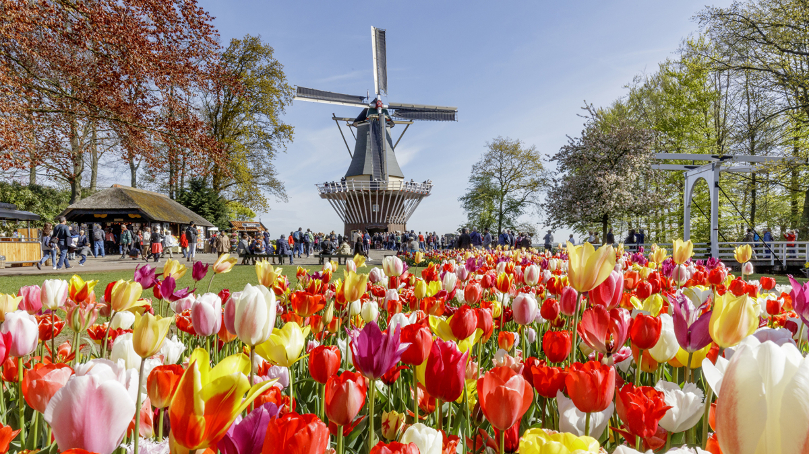

Около замка выращивали травы и зелень для приготовления блюд. Отсюда и пошло название Кёкенхоф (Keukenhof), что с нидерландского переводится “кухонный сад”.
Выращивать цветы с коммерческой целью решили в начале 40-х годов прошлого столетия. Тогда Кёкенхоф служил выставочной площадкой. А после того как в 1949 году экспортеры и предприниматели организовали выставку луковиц и цветов под открытым небом, парк стал публичным местом. Сегодня Кёкенхоф за время парада успевает посетить около 800 000 человек.
